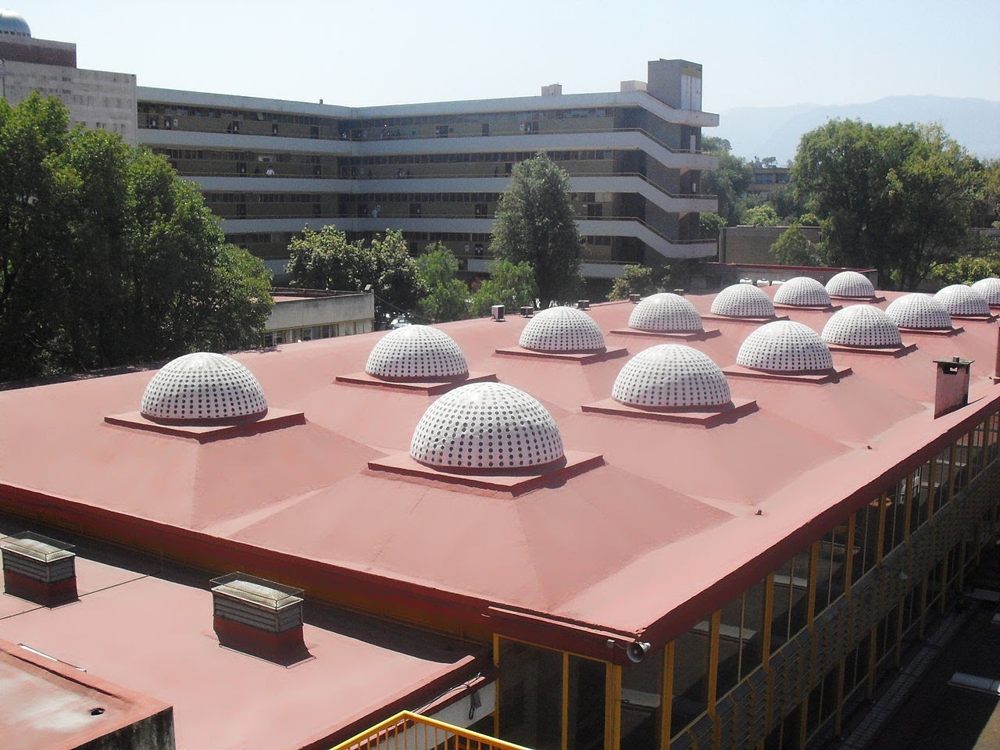

Seminario
Pedagogía en
ingeniería
Aplicar de forma real la pedagogía en
la enseñanza de la ingenieria
Breve historia
Esta iniciativa nació en el año 2014 y siempre ha sido apoyada por proyectos PAPIME. La inquietud es aproximar los temas pedagógicos a los académicos de la Facultad de Ingeniería para que puedan mejorar su enseñanza.
Esta aproximación consiste en aplicar los conceptos y las técnicas pedagógicas específicamente a la enseñanza de la ingeniería y no solo como temas teóricos.

Tomada de:
https://www.wikiwand.com/es/
Facultad_de_Ingenier%C3%ADa_
(Universidad_Nacional_
Aut%C3%B3noma_de_M%C3%A9xico)
Dónde estamos hoy
A lo largo de estos años hemos logrado abrir un espacio para que los profesores puedan expresar e intercambiar sus inquietudes sobre cómo mejorar día a día en su salón de clase.